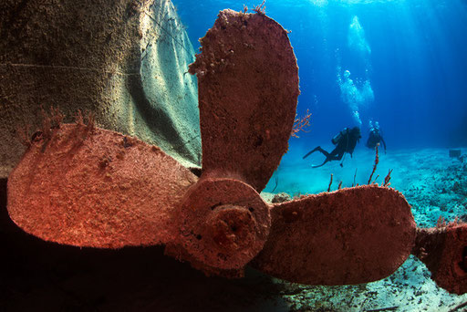
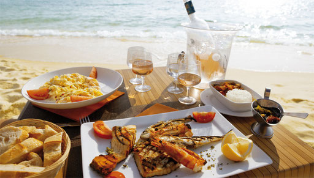

The crystal clear, bright blue waters around the island turn it into a paradise for divers. The waters stay clear thanks to the filtering properties of lime stone and a rich underwater fauna. It is not uncommon to have a visibility range of 165 to 200 feet (50 – 60 meters). We will organize exclusive diving tours for you, from beginners‘ to professional level. Just ask us. – we also offer individual reef diving, steep face diving and more.
We will pamper you with exquisite international dishes and exotic island specialities. The restaurant menu varies according to the different seasons. The chef‘s recom-mendations do too. We serve you a range of cocktail creations to accompany these culinary delicacies to delight both your eyes and your palate. Enjoy the perfect sunset from our terrace with sea views – We are looking forward to your visit!
